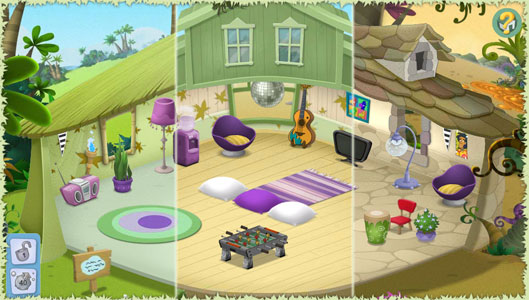
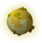
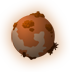
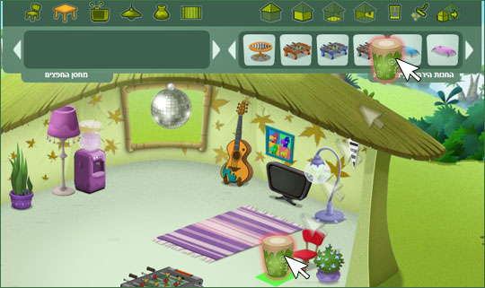
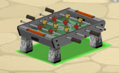
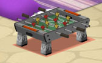
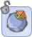
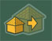
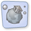

|
Frequently Asked Questions - ekoloko moons

What are the ekoloko moons?
ekoloko is a unique planet. Much like Earth and Hetra a single large moon orbits around it (Ekoluna), but, Much like Saturn, it also has a belt made out of thousands of miniature moons. Dizzie Greenleaf, and 3Top have built a small water pump, a solar energy system and a plastic oxygen dome on each and every moon. Adam Greenleaf decided to allow brave Pioneers to build their houses on these moons, and produce oxygen and food for the entire ekoloko population. There are several types of moons in ekoloko:
Tropical Moon
The Tropical moon’s climate is extremely hot and humid. This climate supports many types of plants.
Desert Moon
The Desert Moon has magnificent views and a very dry climate. The days are very hot and the nights are cold. It is pretty complicated to grow plants on a desert moon, but if you are patient and persistent you may succeed. The crop of the desert moon is rare and very valuable.
Swamp Moon
The Swamp Moon is foggier and more mysterious than other moons. The climate is comfortable yet extremely wet. There is no shortage in water but one should watch his step while exploring the swamps. Rare plants and mushrooms grow on the swamp moon.
Back To Top.

How do I get to my own ekoloko moon?
To access your moon, click on to the left of your Chat Bar.
Back To Top.

Can anyone become an owner of an ekoloko moon?
The mission of populating the new moons of ekoloko was awarded only to Pioneers. Ekos that are not Pioneers may visit the moons that are populated by Pioneers.
Back To Top.

What's on my moon?
Every moon in ekoloko was equipped with a basic tent, a water pump, a see through plastic dome to keep the oxygen in, and a solar energy station. In the near future you will be able to develop your own garden and grow plants that will supply food and oxygen for the entire ekoloko population.
Back To Top.

What can I do here?
Adam Green Leaf's grand plan is to allow brave Pioneers to populate and research new moons, where they can develop fields that will produce food and oxygen for the ekoloko population. As a first step you can build and decorate your house, entertain your eko friends and learn more about your own private moon.
Back To Top.

How can I get more stuff for my moon house?
You may buy additional items for your home by clicking this icon. Select the item that you desire from the store, approve the purchase and the item will appear as part of your storage. To get back to your home click on.
Back To Top.

How do I sell stuff I don’t want in my house anymore?
In order to sell house items go to “buy & design” mode, drag the item you wish to sell from the house or from your storage to the top menu. Confirm the sale then exit the design mode by clicking.

Back To Top.

Can I re-arrange my house?
In oder to re arrange items in your moon house enter the buy & design mode by clicking on, Select an item and drag it to its new location. Items can be placed on the floor, the walls or the ceiling.
You may drag the item around the house and locate it on spots that are lit with a green light.

A red light means that the spot is either too small or is not appropriate for this item.

To flip an item, click it then click.
In order to save the new arrangement and exit this mode click.
Back To Top.

Can I visit other moons?
In order to visit other Pioneers’ moons, click the Pioneer then click  on his personal menu. If the moon isn’t locked you’ll be teleported there immediately.
Back To Top.

Can I upgrade my house?
In order to upgrade your moon house you need to be a moon Captain for at least 15 days. After this minimal period has passed you’ll be able to upgrade your house using this button  on the top menu. Please note that once you move to an upgraded home all of your items will be moved to storage and you will need to design your house from scratch.
Back To Top.

Can I move to a new moon?
As part of this special Pioneer Mission, Adam Greenleaf has requested pioneers to populate a new moon for at least 30 days before they have an option to move to a different moon. At the end of this period you may click  and select a new moon. Please note, once you move to a new moon your items will move to storage but you will enter a basic tent in your new moon.
Back To Top.
Can I prevent others from entering my moon?
You may lock your moon by clicking. Please note, once you locked your moon no other Eko will be able to visit and all the other Ekos that were on your moon already will be teleported back to ekoloko. To unlock your moon click on again.
Back To Top.
What happens to my moon once my Pioneer membership expires?
Once your Pioneer membership expires you will not be able to visit your moon. Once you re-activate your membership, you will get access to your moon including all the upgrades you have inserted to it.
Back To Top.
What’s going to happen next on my moon?
Your objectives as pioneers are to populate new moons and grow plants that will supply food and oxygen to the entire ekoloko population. Soon you will be able to add a backyard to your house and start growing crop that will be used by you and by your fellow Ekos. In addition new moons will be revealed and populated.
Back To Top.
What is the sign which is located near my moon home?
The sign located near your home represents your Captain's Log. Clicking it will allow your visitors to learn your moon's name, the name of the Captain (yours) and your adventures on the day of the visit.
Back To Top.
What do the icons that relate to the house items mean?
What is the meaning of every icon attached to the items in the house store?
Let’s start with the top right icon, and make our way clockwise to the others.

(1) Indicates What Generation Eko you need to be in order to use this item.
(2) Indicates how much energy you need to operate this item. As days on your moon pass you’ll be able to upgrade your solar energy station and produce more energy.
(3) Indicates the Category of the item (Chairs, tables Etc)
(4) If the item has a time stamp on it (when the clock is not graded out) this will indicate how many days you have to use this item.
(5) indicates the number of Pio Points you need to acquire to use this item
Back To Top.
|